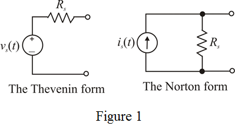

(a)
Calculate the Thevenin voltage.
Therefore, the Thevenin voltage,  is .
is .
Calculate the Norton current.
Therefore, the Norton current, is .
Calculate the internal resistance.
Therefore, the internal resistance,  of the signal source is .
of the signal source is .
The two alternative representations of a signal source – The Thevenin form and the Norton form are shown in Figure 1.

(a)
Calculate the Thevenin voltage.
Therefore, the Thevenin voltage, is .
Calculate the Norton current.
Therefore, the Norton current, is .
Calculate the internal resistance.
Therefore, the internal resistance, of the signal source is .
(b)
Calculate the Thevenin voltage.

Therefore, the Thevenin voltage, is .
Calculate the Norton current.
Therefore, the Norton current, is .
Calculate the internal resistance.
Therefore, the internal resistance,  of the signal source is
of the signal source is  .
.